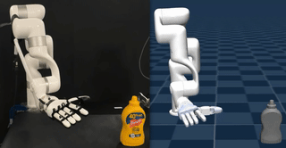

|
Changwei Jing
I am a second-year M.S. student in ECE at UC San Diego, working with Prof. Xiaolong Wang.
Previously, I received my B.S. in Physics from Shanghai Jiao Tong University.
I am broadly interested in robotics, with a focus on dexterous manipulation,
driven by the goal of enabling robotic hands to physically perform complex
tasks.
|

|
|
arXiv

|
Contact-Aware Neural Dynamics
Changwei Jing,
Jai Krishna Bandi,
Jianglong Ye,
Yan Duan,
Pieter Abbeel,
Xiaolong Wang†,
Sha Yi†
Preprint, 2026
Website
/
arXiv
/
Twitter
|
ICRA

|
Switchable Neural Teleoperation
Jianglong Ye*,
Changwei Jing*,
Kezhou Chen,
Keyi Wang,
Sha Yi,
Xueyan Zou,
Xiaolong Wang
International Conference on Robotics and Automation
(ICRA), 2026
Paper
/
Video
|
arXiv

|
A Study of Dexterous Hand Degrees-of-Freedom for Teleoperation and
Imitation Learning
Kezhou Chen*,
Changwei Jing*,
Chengzhe Jia,
Ge Yang,
Sha Yi,
Xiaolong Wang
Preprint, 2025
|
arXiv

|
From Power to Precision: Learning Fine-grained Dexterity for
Multi-fingered Robotic Hands
Jianglong Ye*,
Lai Wei*,
Guangqi Jiang,
Changwei Jing,
Xueyan Zou,
Xiaolong Wang
Preprint, 2025
Website
/
arXiv
/
Twitter
|
|